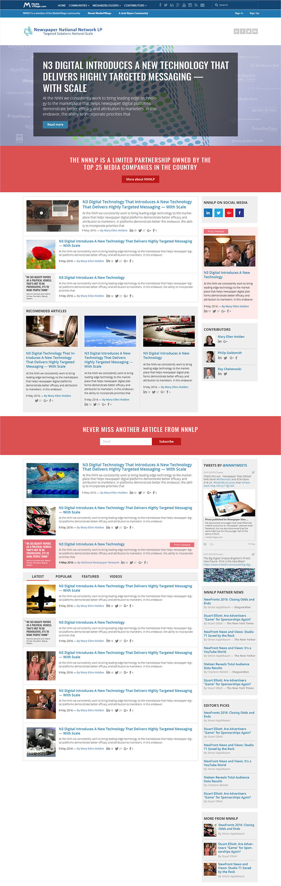

UX/UI Designer Alex Boykiv
- I specialize on usable interfaces, I know how to orgonize a lot of user stories and screens in one working system;
- I make animated and programmed prototipes with any complexity. For prototipes with logic I use Framer and Javascript;
- I make mockups that are eaase to develop because I worked as a frontend developer for more than two years.
